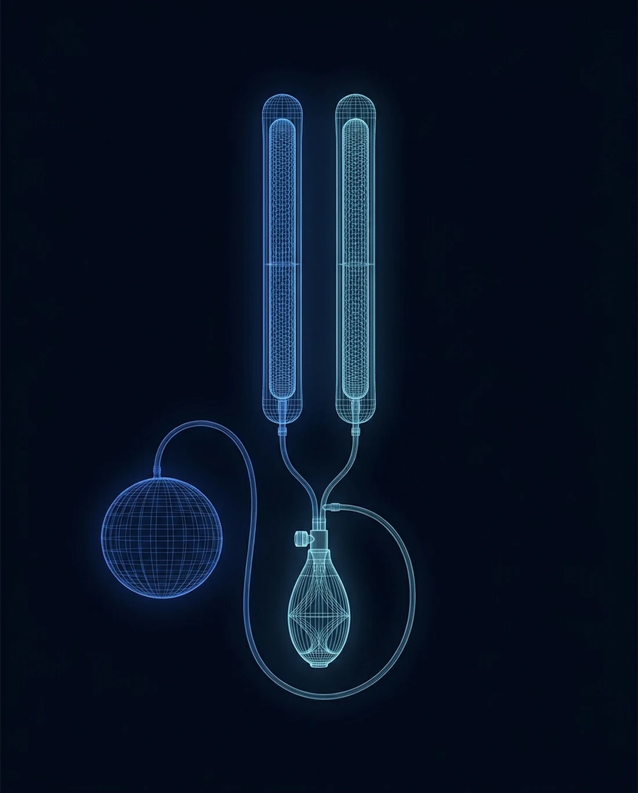

A definitive answer
when pills stop working
For men whose ED has not responded to medication, injections, or other therapies, a penile implant restores reliable, spontaneous function. It is fully concealed, feels natural, and carries among the highest satisfaction rates of any ED treatment.

How a penile implant works
An inflatable implant replaces the erectile cylinders inside the penis with soft fluid-filled ones, connected to a small concealed pump. Squeezing the pump produces a firm, natural-feeling erection on demand; releasing it returns everything to a relaxed state. Nothing is visible from the outside.
The procedure is performed through a small incision and typically takes about an hour. Because the implant works mechanically, it is effective regardless of the cause of ED, which is why satisfaction rates among men and their partners are consistently the highest of any ED treatment.
Consultation
We confirm that simpler options have been given a fair trial and that an implant is the right next step.
Outpatient surgery
The implant is placed through a small incision in a procedure that typically takes about an hour.
Recovery
Most men are back to normal daily activity quickly, and cleared for sexual activity in about four to six weeks.
Reliable function
Reliable function on your schedule, fully concealed and natural feeling.
Why men choose an implant
It works when nothing else has
Because the implant is mechanical, it is effective regardless of what caused the ED.
Highest satisfaction rates
Patient and partner satisfaction with modern implants is consistently the highest of any ED treatment.
Fully concealed
The device is entirely internal. Nothing is visible, and nothing about your daily life changes.
Spontaneity restored
No pills to time and no injections to plan. Function is available whenever the moment is right.

Find out if an implant is right for you
A confidential consultation reviews what you have tried, answers every question, and lays out exactly what to expect. Telehealth visits are available. For the fastest response, send the office a secure message; the reply comes back by text.
Chief of Urology, Providence St. Joseph Hospital · UroLift Center of Excellence · Orange County's highest-volume Aquablation surgeon